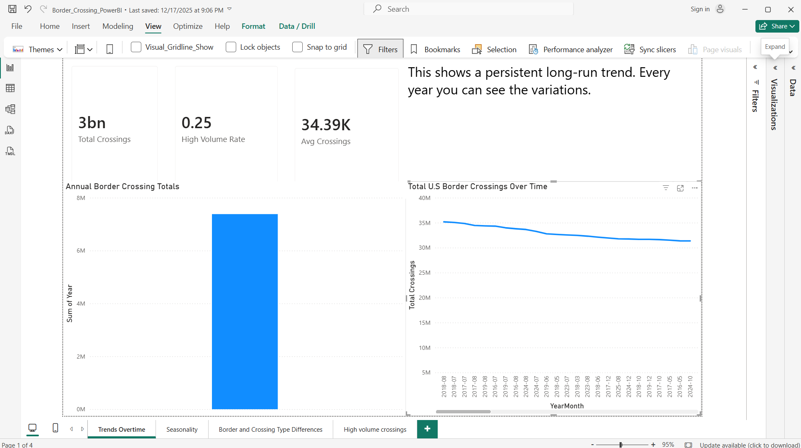
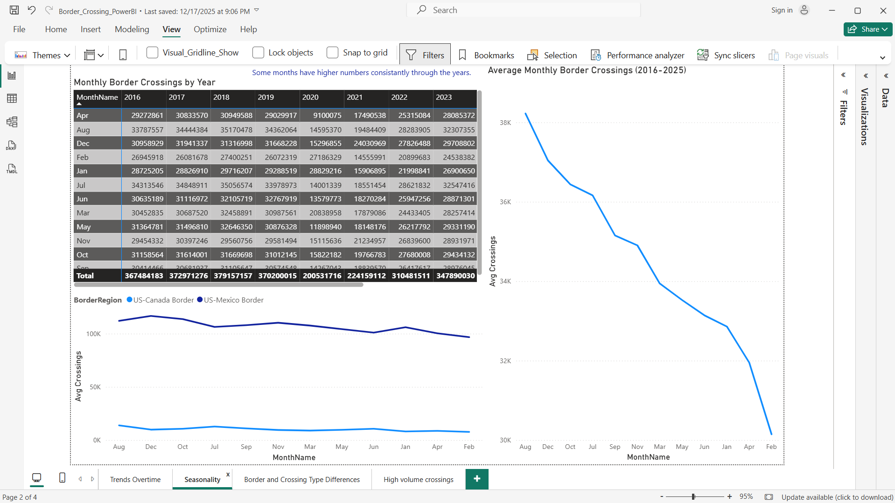
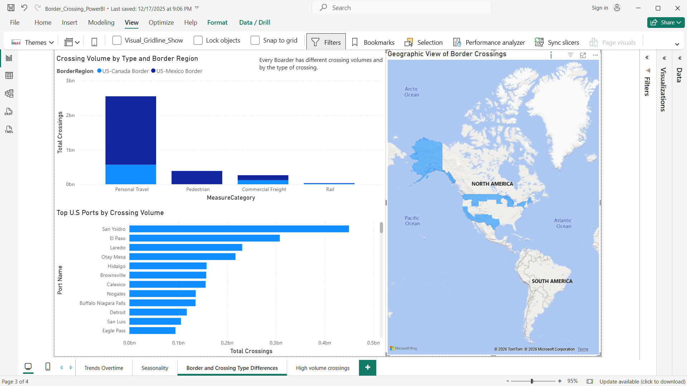
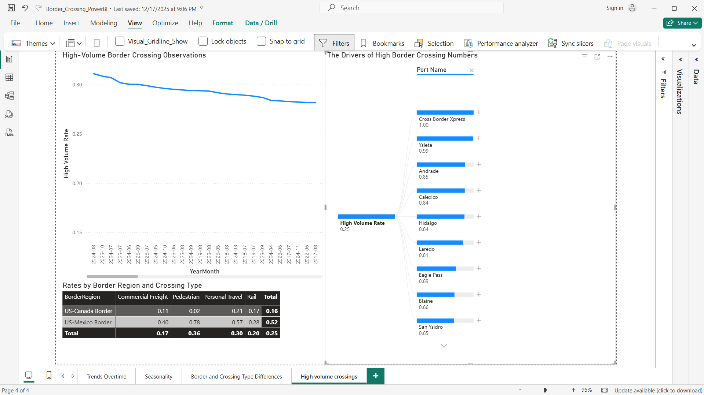

Power BI Data Visualization
Developed an interactive Power BI dashboard analyzing U.S. border crossing activity over time using Bureau of Transportation Statistics data. Used time-series analysis, regional comparisons, and crossing-type groupings to show patterns in trade and travel behavior.
- Analyzed border crossing trends from 2016–2025
- Identified seasonal patterns and regional differences
- Applied regression modeling to understand drivers of high-volume crossings

Overview page showing long-run border crossing trends and summary metrics.

Seasonality page comparing monthly border crossing activity across years.

Geographic and crossing-type breakdown highlighting top ports and border regions.

High-volume crossing page showing indicators tied to traffic intensity.
Scroll through the dashboard screenshots to view trend analysis, seasonality, geographic differences, and high-volume crossing indicators.
View Project Review